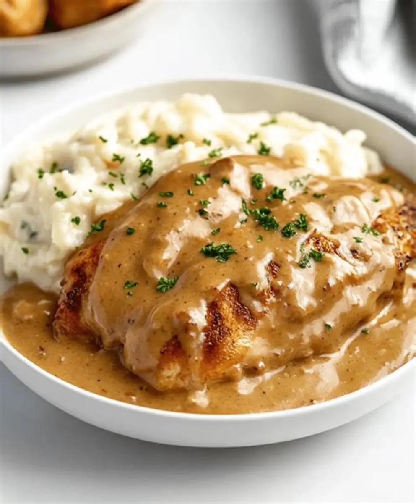
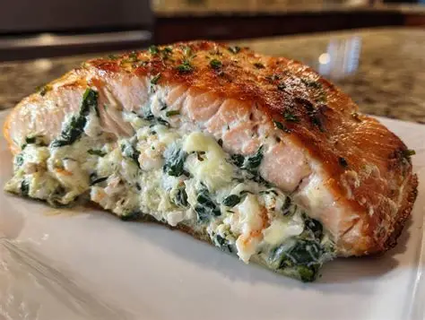
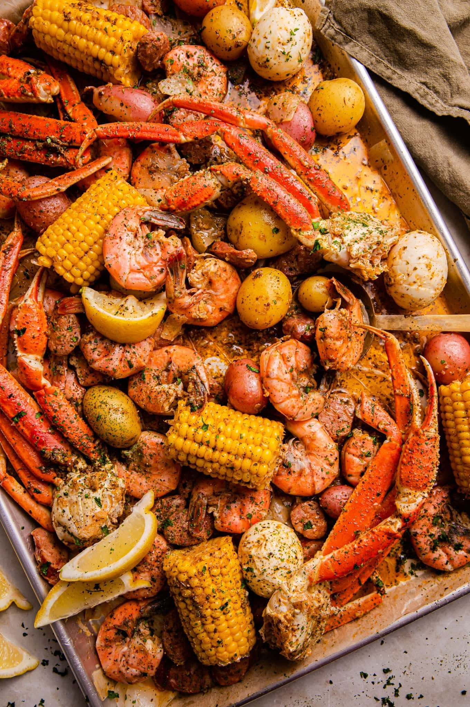
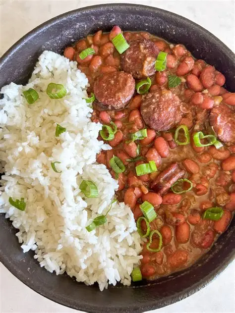

Cooking
My favorite hobby is cooking. I love cooking for family, events, friends, and anyone who enjoys home cooked meals. My love for cooking started when I was about 6 years old, I enjoyed being in the kitchen with my parents watching them prepare dinner.
Here are some of the meals I have prepared:

Smothered Chicken w/ mashed potatoes

Stuffed Salmon

Crab Leg Seafood Boil

Red beans w/ white rice